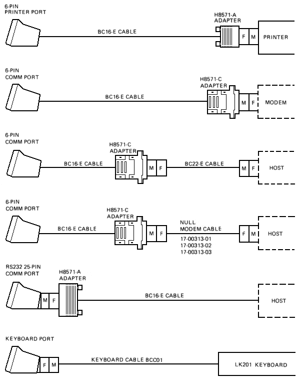

| Appendix B | Contents | Appendix E |
This appendix provides information on how the VT320 communicates with a host computer, printer, or modem. The appendix shows the cables you can use for different system configurations. It describes how XON and XOFF characters help control data flow. The last section describes the signals carried by the connectors on the rear of the terminal.
The terminal operates on full-duplex asynchronous lines only, with 10 possible transmit and receive speeds. You can use split transmit and receive speeds, but you must use the same speeds as your host system and printer.
To match your host system's speed, use the Communications Set-Up screen. To match your printer's speed, use the Printer Set-Up screen. See Chapter 4.
For more information on communication, see the VT320 Programmer Reference Manual.
You can connect the VT320 directly to a local host system with a cable. You can also connect the terminal indirectly to a remote host system, using (1) a terminal server, or (2) a modem or acoustic coupler connected to public-switched or dedicated telephone lines. See "Modems" in Chapter 6.
You can connect the VT320 to a local, asynchronous, serial printer by using a null modem cable.
Figure C-1 shows the DEC-423 and RS232 cables you can use to connect the VT320 to a host system or printer. To order cables, see Appendix B.
|  |
The VT320 stores incoming characters in a character input buffer. The buffer can hold 254 characters. The terminal processes characters from the buffer on a first-in/first-out basis.
When the input buffer fills to 64 or 128 characters, the terminal sends an XOFF character to stop the host system from sending more characters. The default setting is 64. You can select from three settings -- 64, 128, or no XOFF -- using the Communications Set-Up screen.
NOTE: If you select "No XOFF" in set-up, the terminal does not send an XOFF character to the host system when the input buffer fills. Selecting "No XOFF" also disables the Hold Screen key. With XOFF disabled, there is no way to ensure that data will not be lost.
If the host system fails to respond to the XOFF character, the terminal sends a second XOFF character when the input buffer fills to 220 characters. The terminal sends a third XOFF character when the buffer is full.
When the input buffer falls below 32 characters, the terminal sends an XON character to tell the host system to start sending characters again.
If you enable XON/XOFF, the terminal recognizes received XON and XOFF characters. When the terminal receives XOFF, it stops sending data (except XON/XOFF characters). If the keyboard data buffer overflows, the keyboard locks and the Wait indicator turns on. The terminal resumes transmission when it receives an XON.
When the VT320 makes a connection to the host system via a modem, the terminal performs the following operations to ensure it is ready to send and receive.
Any of the following conditions will disconnect the connection to the host system.
The usual way to disconnect communications is to type Shift-Break. The host system's response to the disconnect signal depends on the system and the software.
A break condition is the occurrence of a continuous space on a communication line for greater than one character time. If you are using a modem, this condition causes the modem to disconnect the terminal from the host system.
The Break key has three functions. You can enable or disable the Break key in the Keyboard Set-Up screen.
The VT320 has two host system (comm) connectors and one printer connector on the rear of the terminal. Table C-1 describes the interface signals for the 25-pin host system connector. Table C-2 describes the signals for the 6-pin host connector and 6-pin printer connector. The following figure shows the pin numbers for the 6-pin connectors.
| Pin | Signal | Mnemonic | EIA/CCITT/DIN | Description |
|---|---|---|---|---|
| 2 | Transmitted data | TXD | BA/103/D1 | From VT320 Sends serial characters. Held in mark state when characters are not being sent. In modem control modes, sends data only when RTS, CTS, DSR, and DTR signals are on. |
| 3 | Received data | RXD | BB/104/D2 | To VT320 Receives serial characters. In modem control modes, ignores characters if RLSD signal is off. |
| 4 | Request to send | RTS | CA/105/S2 | From VT320 When on, places the modem in transmit mode. |
| 5 | Clear to send | CTS | CB/106/M2 | To VT320 When on, tells the VT320 that the modem is ready to send. |
| 6 | Data set ready | DSR | CC/107/M1 | To VT320 When on, tells the VT320 that the modem is in data mode and is ready to exchange RTS, CTS and RLSD signals. |
| 7 | Signal ground | SGND | AB/102/E2 | Serves as common ground reference potential for all connector signals, except protective ground. |
| 8 | Receive line signal detect (carrier detect) | RLSD | CF/109/M5 | To VT320 When on, tells the VT320 that the signal received on the communication line is good enough to ensure correct demodulation of received data. When off, indicates no signal received, or signal is unsuitable for demodulation. |
| 12 | Speed indicator | SPDI | CI/112/M4 | To VT320 When on, enables a modem to control the terminal's transmit and receive speeds. Sets the speeds to 1200 bits per second, regardless of set-up selection. |
| 20 | Data terminal ready | DTR | CD/108.2/S1.2 | From VT320 When on, tells the modem that the terminal is ready to send or receive. |
| 23 | Speed select | SPDS | CH/111/S4 | From VT320 When on, tells the modem that the receive speed selected in set-up is greater than 600 bits per second. |
| Pin | Signal | Mnemonic | Description |
|---|---|---|---|
| 1 | Data terminal ready | DTR | From VT320 When on, tells the modem or printer that the VT320 is ready to send or receive. |
| 2 | Transmitted data | TXD+ | From VT320 Sends serial characters. Held in the mark state (-) when characters are not being sent. In modem control modes, sends data only when DSR and DTR signals are on. |
| 3 | Transmit signal ground | TXD- | Provides the common ground reference potential for transmitted signals TXD+ and DTR. |
| 4 | Receive signal ground | RXD- | Provides the common ground reference potential for received signals RXD+ and DSR. |
| 5 | Received data | RXD+ | To VT320 Receives serial characters. |
| 6 | Data set ready | DSR | To VT320 For the comm line: When on, tells the VT320 that the modem is in the data mode and is ready to communicate. For the printer line: Receives DTR on this line. If DSR is present at power-up, the printer controls print operations. If DSR is not present at power-up, the terminal checks for DSR before each print operation. |
The VT320 operates in accordance with the following national and international communication standards.